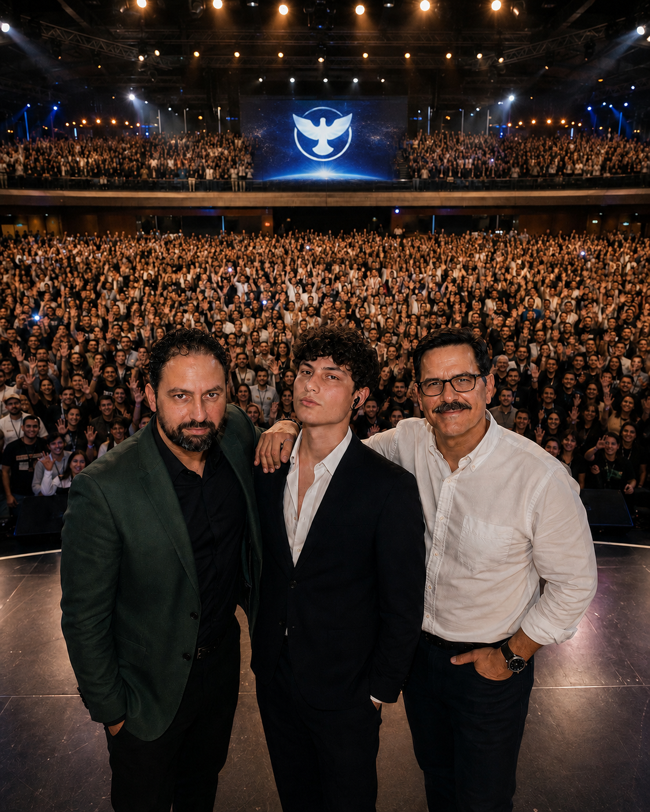

Misión
Ayudar a las personas a encontrar a Dios a través de experiencias digitales cuidadosamente creadas que comuniquen esperanza, verdad bíblica y comunidad auténtica.
Emmanuel · Dios con Nosotros
Un lugar digital para quienes buscan, dudan, creen y simplemente necesitan un poco de esperanza hoy.

Quiénes somos
Emmanuel existe para ayudar a las personas a redescubrir a Dios a través de experiencias digitales significativas, relaciones auténticas y verdad bíblica.
No competimos con ninguna iglesia ni ministerio. Simplemente cumplimos con lo que se nos ha llamado a hacer: recordarle a alguien, en medio del ruido, que Dios no está lejos.
Hacia dónde vamos
Ayudar a las personas a encontrar a Dios a través de experiencias digitales cuidadosamente creadas que comuniquen esperanza, verdad bíblica y comunidad auténtica.
Convertirnos en una de las comunidades cristianas digitales más respetadas del mundo, combinando integridad bíblica, narrativa cinematográfica, diseño excepcional y conexión humana real.
Nuestros fundamentos
La presencia de Dios transforma vidas.
La verdad siempre se comunica con amor.
La belleza también puede glorificar a Dios.
La autenticidad vale más que la perfección.
La comunidad importa más que la popularidad.
Todos merecen sentirse bienvenidos aquí.
He aquí, una virgen concebirá y dará a luz un hijo, y llamarás su nombre Emmanuel, que traducido es: Dios con nosotros.
Mateo 1:23 · RVR1960
Un espacio para orar
No necesitas las palabras correctas. Solo un corazón honesto. Si hoy necesitas oración, escríbenos por nuestras redes — te leemos, y oramos contigo.
 Devocional
Devocional
Esperanza
Aun en los días más oscuros, hay una presencia que no se retira. Reflexionamos sobre lo que significa sostenerse en silencio.
Artículo completo — próximamente
 Devocional
Devocional
Duda
Esperar no siempre se siente como fe. A veces se siente como espera, simplemente.
Artículo completo — próximamente
 Devocional
Devocional
Comunidad
Dios rara vez llega con estruendo. Casi siempre llega a través de alguien que decide quedarse.
Artículo completo — próximamente
Estamos preparando los primeros encuentros de Emmanuel. Síguenos en redes para ser el primero en enterarte.